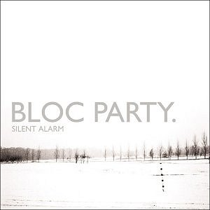
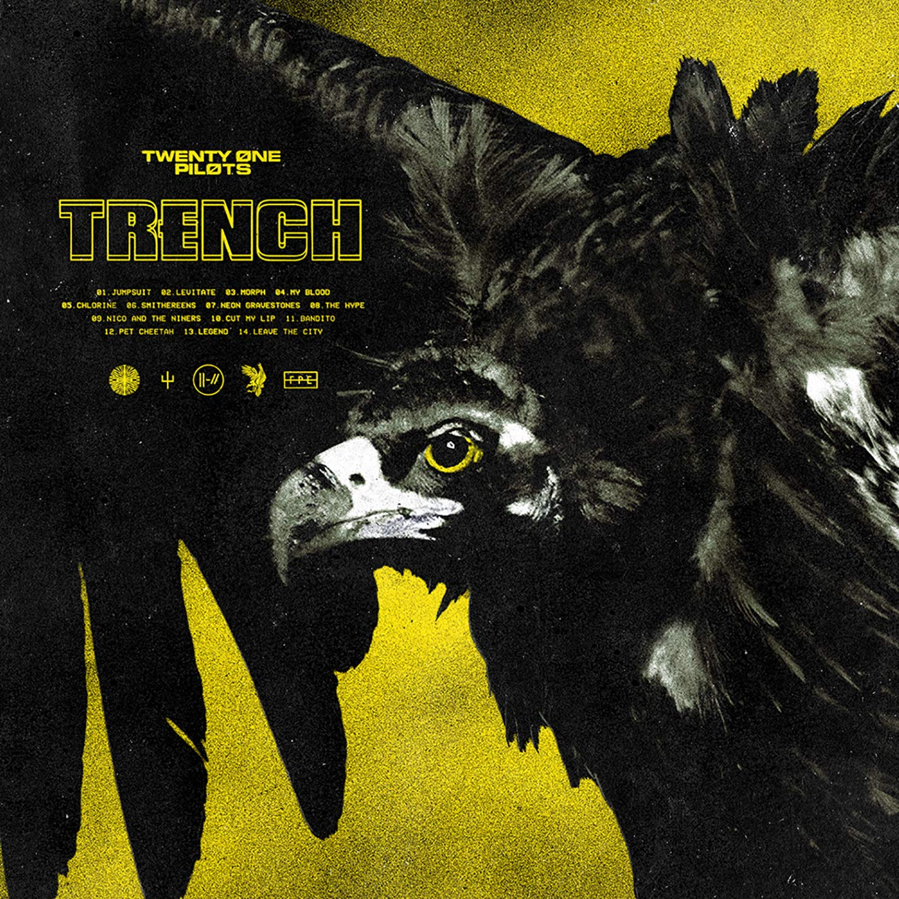
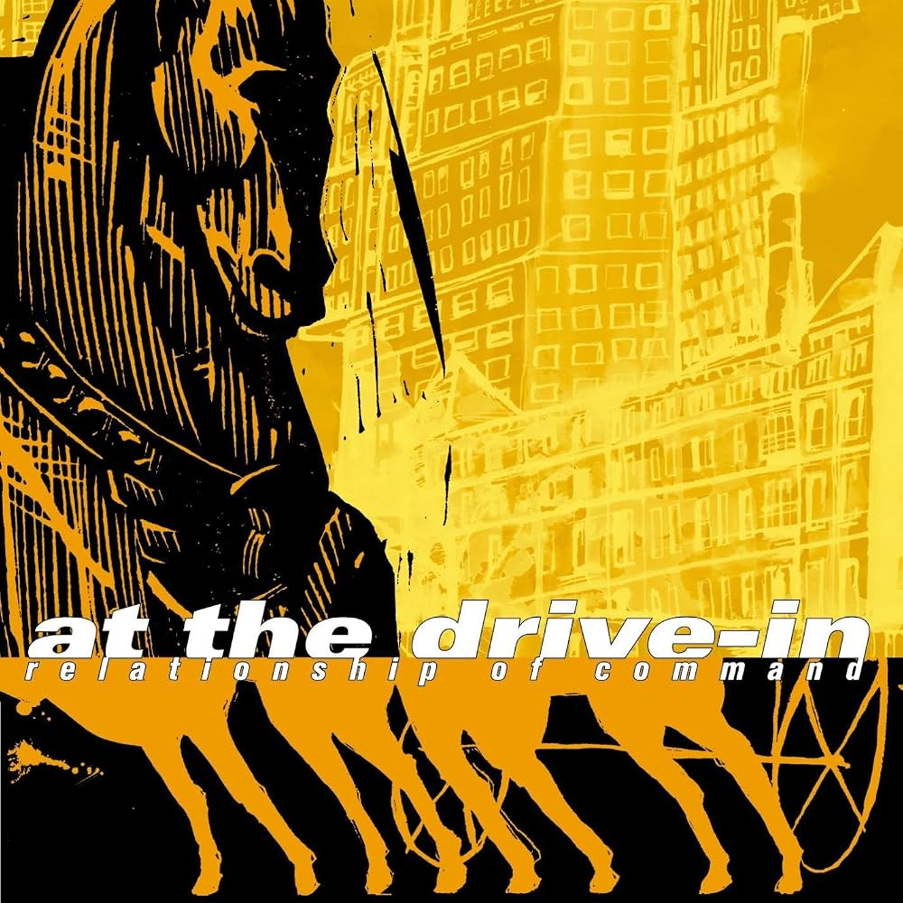
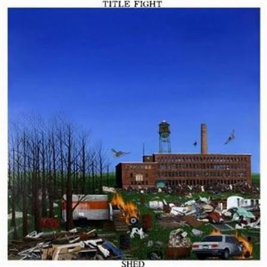

Meu primeiro post
Por: Victor Olavo
Bem-vindo ao meu blog, aqui será feito a indicações para expansão de seu espectro musical, indicando albuns e artistas para você
Este blog será sobre indicações de albuns e artistas!
Por: Victor Olavo
Bem-vindo ao meu blog, aqui será feito a indicações para expansão de seu espectro musical, indicando albuns e artistas para você

Por: Victor Olavo
Silent Alarm é o 1° Álbum da banda britânica Bloc Party, lançado em 2005. Amplamente aclamado pela crítica e favorito dos fãs, este projeto mistura indie rock, post-punk e batidas eletrõnicas e dançantes que cativam o ouvinte. Ganhou o prêmio de álbum do ano de 2005 pela NME Awards, e influenciou diversas bandas posteriores a recriar a atmosfera e o som que a banda desenvolveu (como Paramore, Two Door Cinema Club e Foals). Combinando batidas fortes e intensas, guitarras contrastes e riffs melódicos com pedais, uma voz de alcance altíssimo e timbre característico e baixos que conectavam todos esses elementos, Silent Alarm se destaca na discografia mundial dos anos 2000.
Fonte: TMDQA!


